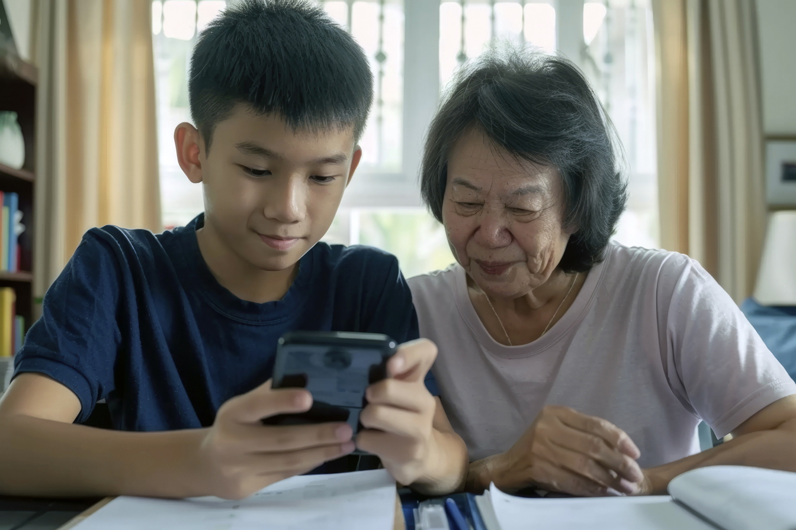

AI & App Detail
CareWise Guardian AI
ระบบที่ช่วยให้การดูแลผู้สูงอายุยังคงความอบอุ่นของมนุษย์ พร้อมเพิ่มความมั่นใจด้วยข้อมูลที่ชัดเจนและการติดตามแบบต่อเนื่อง
AI ของ CareWise ไม่ได้ถูกออกแบบมาเพื่อแทนคนดูแล แต่ทำหน้าที่เป็นผู้ช่วยที่เชื่อมข้อมูลสุขภาพ คาดการณ์ความเสี่ยงล่วงหน้า สนับสนุนการตัดสินใจของทีมดูแล และส่งต่อความอุ่นใจไปถึงครอบครัวผ่านแอปอย่างเป็นระบบ
Real-time Monitoring 24/7
Predictive Analytics 7-30 วัน
Personalized Care Plan
LINE / App / Telehealth
Central Platform
Guardian AI ของ CareWise ถูกออกแบบเป็นแกนกลางที่รวมทุกสัญญาณสำคัญไว้ในที่เดียว
CareWise Guardian AI รวบรวมข้อมูลจาก Wearable, IoT Sensor, Camera และการบันทึกของทีมดูแล เพื่อให้ครอบครัวและทีมงานเห็นภาพสุขภาพได้ต่อเนื่อง ไม่ต้องรอจนเกิดเหตุแล้วค่อยตามข้อมูลย้อนหลัง
Real-time Health Monitoring
ประมวลผลค่า Heart Rate, SpO2, การเคลื่อนไหว, การล้ม และการใช้ยาแบบเรียลไทม์ พร้อมแจ้งเตือนอัตโนมัติเมื่อพบความเสี่ยงที่เกินเกณฑ์
Predictive Analytics
วิเคราะห์แนวโน้มสุขภาพจากข้อมูลย้อนหลัง เพื่อคาดการณ์ความเสี่ยงล่วงหน้า 7-30 วัน เช่น ภาวะหัวใจ ความดันผิดปกติ หรือการถดถอยด้านสมอง
Personalized Care Plan Engine
สร้างแผนการดูแลเฉพาะบุคคลจากโรคประจำตัว ยาที่ใช้ พฤติกรรมการนอน-กิน-ออกกำลังกาย และอัปเดตตามข้อมูลล่าสุดทุกสัปดาห์
NLP & Family Communication
ช่วยให้ครอบครัวสอบถามสถานะสุขภาพ นัดหมายแพทย์ และรับรายงานประจำวันผ่าน LINE หรือแอป โดยไม่ต้องโทรหาทีมงานทุกครั้ง
AI ในที่นี้จึงไม่ใช่แค่ “ระบบแจ้งเตือน” แต่เป็นโครงสร้างที่ช่วยให้การดูแลมีทั้งความต่อเนื่อง ความละเอียด และความสบายใจสำหรับทุกฝ่าย ตั้งแต่ผู้สูงอายุ ครอบครัว ไปจนถึงทีมแพทย์และพาร์ทเนอร์
AI Across Services
แพลตฟอร์มเดียว แต่ต่อยอดคุณภาพบริการได้ครบทั้ง 3 ช่องทาง
ดูแลภายในศูนย์ได้ใกล้ชิดและตอบสนองเร็วขึ้น
Sensor และ AI Camera ภายในศูนย์วิเคราะห์พฤติกรรมรายวัน ตรวจจับการล้ม แจ้ง Caregiver ที่ใกล้ที่สุด พร้อมแนะนำกิจกรรมและโภชนาการให้เหมาะกับแต่ละคน
ช่วยทีมเยี่ยมบ้านทำงานแม่นขึ้นโดยไม่ทิ้งความเป็นมนุษย์
Caregiver ที่บ้านบันทึกข้อมูลผ่านแอป ส่วน AI ช่วยจัดลำดับการเยี่ยม วิเคราะห์รายงานสุขภาพ และแจ้งเตือนเมื่อมีค่าที่เบี่ยงเบนจากเกณฑ์
เชื่อมการดูแลหลังออกจากโรงพยาบาลให้ต่อเนื่อง
แพลตฟอร์มเชื่อมต่อกับระบบโรงพยาบาลผ่าน Secure API เพื่อให้แพทย์ติดตามผู้ป่วยหลัง Discharge ได้ต่อเนื่อง และลดโอกาสกลับเข้า Admit ซ้ำ
ลดภาระงานเอกสารและเพิ่มเวลาที่ใช้กับคนจริง
AI ช่วยสรุปรายงานสุขภาพ จัดทำบันทึก และจัดตารางงานได้ดีขึ้น ช่วยลดชั่วโมงงานธุรการของทีมดูแลและเพิ่มประสิทธิภาพการบริการในระยะยาว
Family App Experience
แอปของ CareWise ทำให้ครอบครัว “เห็นภาพการดูแลจริง” และรู้สึกอุ่นใจได้ทุกเมื่อ
ด้านล่างคือ mockup แบบ interactive ที่จำลองประสบการณ์บนมือถือจริง ผู้เข้าชมสามารถกดสลับหน้าจอเพื่อดูว่า dashboard, alert, report และ telehealth จะหน้าตาเป็นอย่างไรเมื่อใช้งานจริง
มุมมองรวมของสุขภาพประจำวัน อ่านค่า vital sign แผนดูแล และสถานะล่าสุดได้ในหน้าจอเดียว
ภาพที่อยากให้คนดูรับรู้จากแอปนี้
- ข้อมูลสำคัญต้องอ่านง่าย และไม่ทำให้ครอบครัวรู้สึกกังวลเกินจำเป็น
- เมื่อเกิดความเสี่ยง ต้องเห็นบริบท ระดับความเร่งด่วน และทางเลือกในการตอบสนองทันที
- การนัดพบแพทย์และการอ่านรายงานควรทำได้จากหน้าจอเดียวกันอย่างเป็นธรรมชาติ
Good Morning
คุณยายสมพร
วันนี้อารมณ์คงที่ และพักผ่อนได้ดี
82/ 100 Health Score
Heart Rate72 bpm
SpO298%
Sleep7h 40m
Medicationครบ 3/3 ครั้ง
Today's Care Plan
เดินช้า 15 นาที, ทานยาหลังอาหารเช้า, วิดีโอคอลกับลูกสาวเวลา 18:30 น.
HomeReportCareCall
High Confidence Alert
พบการทรุดตัวผิดปกติในห้องนั่งเล่น
Guardian AI ตรวจพบความเสี่ยงสูงจาก Camera และ Wearable พร้อมส่งสัญญาณถึงครอบครัวและ Caregiver ใกล้ที่สุดแล้ว
Call Care TeamOpen Camera Log
Response Timeline
10:02 ระบบแจ้งเตือนDone
10:03 โทรหาคุณยายDone
10:05 Caregiver กำลังเดินทางETA 4 min
HomeAlertCareCall
Week Summary
รายงานสุขภาพประจำสัปดาห์
แนวโน้มโดยรวมดีขึ้นจากสัปดาห์ก่อน โดยเฉพาะการนอนและการทานยา
Sleep Consistencyดีขึ้น 12%
Fall RiskLow
Medication Adherence100%
Mood & ActivityStable
AI Recommendation
แนะนำคงกิจกรรมเดินช่วงเช้า และเพิ่มการฝึกสมองเบา ๆ 3 ครั้งต่อสัปดาห์
HomeReportCareCall
Next Session
DR
พญ. พิมพ์ชนก
Geriatric Telehealth นัดหมาย 19:30 น.
Join CallReschedule
Pre-call Notes
วันนี้ควรพูดคุยเรื่องการนอนและอาการเวียนศีรษะที่ลดลงหลังปรับยา
Family connectedMic on
HomeReportCareCall
Care Journey
เส้นทางการดูแลของ CareWise Guardian AI คือระบบบริการทั้งหมด ไม่ใช่เฉพาะหน้าจอในแอป
ส่วนนี้สรุปว่า AI, ทีมดูแล, อุปกรณ์ และแอปเชื่อมต่อกันอย่างไรตั้งแต่เริ่มประเมินจนถึงการลงมือดูแลจริง
Guardian AI
ระบบตรวจจับการล้มแบบ Hybrid ช่วยให้แม่นยำขึ้น และเตือนเท่าที่ควรเตือน
CareWise ไม่พึ่งอุปกรณ์ชิ้นเดียว แต่ใช้แนวคิด Multi-source AI Decision เพื่อรวมข้อมูลจากหลายแหล่ง ลด False Alarm และทำให้การแจ้งเตือนมีน้ำหนักมากขึ้น
Wearable: Accelerometer + GyroscopeAI Camera: Pose EstimationSmart Sensor: Movement & EnvironmentHybrid Confidence Score
Wearable
เหมาะกับการตรวจจับแรงกระแทกและการล้มที่รุนแรง โดยเฉพาะกรณีนอกบ้านหรือผู้สูงอายุยังเคลื่อนไหวได้มาก
AI Camera
ช่วยเห็นการทรุดตัว หน้ามืด หรือล้มช้าได้ดีขึ้น แม้ไม่ได้สวมอุปกรณ์ และยังวางแนวทางรักษาความเป็นส่วนตัวไว้ชัดเจน
Confidence Score
ระบบจะประเมินเป็น Low, Medium, High เพื่อแยกเหตุการณ์ที่ควรเก็บ log, ส่ง soft alert หรือเข้าสู่ emergency alert ทันที
Warm Response
เป้าหมายไม่ใช่แค่เตือนเร็ว แต่เตือนอย่างมีบริบท เพื่อให้ครอบครัวรู้สึกมั่นใจ และทีมดูแลตอบสนองอย่างเหมาะสมไม่ตื่นตระหนกเกินจำเป็น
AI For Global Scale
Guardian AI ของ CareWise ถูกวางไว้ตั้งแต่ต้นให้รองรับการเติบโตระดับแฟรนไชส์ในอนาคต
Multi-language AI Engine
รองรับภาษาไทย อังกฤษ ญี่ปุ่น จีน และภาษาอาเซียนอื่น ๆ เพื่อให้ประสบการณ์ของผู้ใช้สอดคล้องกันแม้ขยายไปต่างประเทศ
Compliance-ready by Design
แนวคิดระบบรองรับ PDPA, GDPR และข้อกำหนดสุขภาพของแต่ละประเทศ โดยกำหนดสิทธิ์การเข้าถึงข้อมูลตามบทบาทผู้ใช้งาน
AI-driven Franchise Quality Score
ช่วยให้สำนักงานใหญ่เห็นคุณภาพของแต่ละสาขาจาก Response Time, Health Outcome, Staff Compliance และ Customer Satisfaction แบบต่อเนื่อง
Network Effect
เมื่อมีข้อมูลสุขภาพจากหลายสาขามากขึ้น ระบบก็ยิ่งเรียนรู้และช่วยให้การดูแลแม่นยำขึ้นต่อเนื่อง ทั้งกับครอบครัว ทีมดูแล และสาขาใหม่ในอนาคต